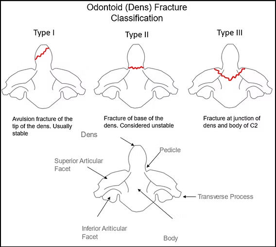
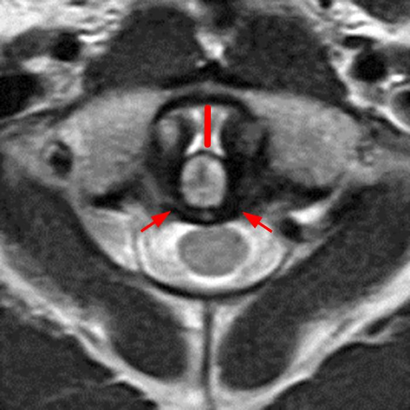
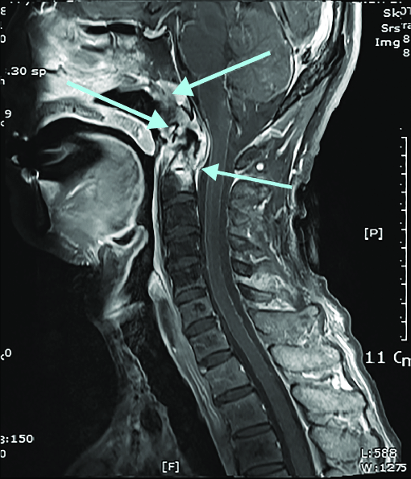

🧪 Explanation
1. Free active Cx mobilization ex
When treating a patient with potential upper cervical instability - involving the atlanto-occipital (C0-C1) and atlanto-axial (C1-C2) joints - the clinical priority shifts entirely from "restoring mobility" to "ensuring structural integrity." Providing free active mobilization in this context is generally considered contraindicated as mobilization likely jeopardizes structural integrity.
The clinical rationale for withholding free active cervical mobilization in patients with suspected upper cervical instability is rooted in the prevention of catastrophic neurovascular complications. In cases where the structural integrity of the atlanto-axial (C1-C2) or atlanto-occipital (C0-C1) joints is compromised, active movement can transition from a therapeutic exercise to a mechanical trigger for serious injury (Hutting et al., 2018; Puentedura et al., 2012).
The primary concern for a physiotherapist is the potential for a serious adverse event, which includes neurovascular insults to the brain, arterial dissection, and even death (Hutting et al., 2018).
2. Passive mobilization for C1-3 levels central PA / right unilateral PA
Similar to active mobilization, passive mobilization is also generally considered contraindicated since mobilization jeopardizes structural integrity under the context of upper cervical instability.
Clinical guidelines explicitly list "instability" and "ligamentous rupture" as absolute contraindications for manual interventions, including manipulation and certain forms of mobilization (Puentedura et al., 2012).
The IFOMPT Framework Guidance
The International Federation of Orthopaedic Manipulative Physical Therapists (IFOMPT) framework provides the gold standard for clinical reasoning in this area:
-Risk Categorization: Patients screened as "high-risk" for cervical vascular or structural issues are given a directive to "Avoid treatment" (de Best et al., 2021).
-Informed Reasoning: The framework emphasizes identifying clinical findings like upper cervical ligamentous insufficiency or arterial insufficiency before any planned interventions, including exercise (Blanpied et al., 2017).
-Mandatory Screening: Clinicians must use sound reasoning to identify "red flags"—such as dizziness, visual disturbances, or symptoms aggravated by neck movement—which indicate that mobilization is unsafe (Puentedura et al., 2012).
3. Neurodynamics exercise with median nerve slider ex
Clinical guidelines explicitly list "instability" and "ligamentous rupture" as absolute contraindications for manual interventions and provocative movements (Puentedura et al., 2012). In the upper cervical spine (C0-C2), rotation or end-range movement can cause mechanical compression or excessive stretching of the vertebral arteries (Steilen et al., 2014).
Neurodynamic maneuvers cause "neural sliding," where the spinal cord moves within the canal. In an unstable segment, this can pull sensitive neural tissue against displaced bony structures or a protruding dens (Rowe et al., 2018).
Stability at the C1-C2 level is almost entirely dependent on the Alar and Transverse ligaments. When these ligaments are injured or lax, they allow excessive movement of the cervical vertebrae, which can lead to nerve root impingement and vertebrobasilar insufficiency (Steilen et al., 2014).
4. Inform doctor for re-assessment +/- further Cx CT scan / MRI
Clinical Prediction Rules (CPRs) for upper cervical instability are designed to identify patients at high risk for serious structural injury while minimizing unnecessary radiation. For physiotherapists, this screening is a two-step process: using validated trauma rules to decide if to image, followed by specific radiological criteria to interpret those images.
The two gold-standard CPRs used to rule out clinically important cervical spine injury in trauma cases are the Canadian C-Spine Rule (CCR) and the NEXUS Low-Risk Criteria.
- Canadian C-Spine Rule (CCR)
Considered superior in sensitivity and specificity compared to NEXUS.
• Step 1: High-Risk Factors? (Age ≥ 65, dangerous mechanism, or paresthesias in extremities). If YES, Radiography is required.
• Step 2: Low-Risk Factors? (Simple rear-end MVC, sitting position in ED, ambulatory at any time, delayed onset of neck pain, or absence of midline c-spine tenderness). If NO, Radiography is required.
• Step 3: Can the patient rotate neck 45°? If NO, Radiography is required.
- NEXUS Criteria
Radiography is indicated unless the patient meets ALL five criteria:
• No posterior midline cervical tenderness.
• No evidence of intoxication.
• Normal level of alertness (GCS 15).
• No focal neurological deficit.
• No painful distracting injuries.
In clinical practice, the discrepancy between "normal" X-rays (XR) and positive MRI/CT findings is a well-documented phenomenon, particularly in the upper cervical spine (C0-C2). This occurs because plain films are 2D projections that often obscure complex 3D fractures or fail to show the ligamentous "soft tissue" damage that constitutes functional instability.
The following evidence-based insights explain why MRI is the gold standard for occult upper cervical instability when X-rays appear clear.
1. The "Occult" Odontoid Fracture (Type II)
Type II odontoid fractures (through the base of the dens) are notoriously difficult to see on X-ray, especially in elderly patients with osteopenia or when there is no significant displacement.
Why XR Misses It: Overlying shadows from the teeth (in the Open-Mouth view) or the base of the skull can obscure the fracture line.
The MRI/CT Advantage: MRI (STIR sequences) will show bone marrow edema at the base of the dens, which is a "smoking gun" for an acute fracture, even if the cortical bone looks intact on plain film.

2. Transverse Ligament Rupture (The "Invisible" Instability)
A patient can have a completely stable-looking X-ray with a normal Atlanto-Dens Interval (ADI) but still have a ruptured transverse ligament. This is known as a functional instability.
Why XR Misses It: X-rays only show bone. If the patient is not in a position of stress (flexion), the C1-C2 relationship may appear normal.
The MRI Advantage: T2-weighted MRI can directly visualize the Transverse Ligament. A "high signal" or discontinuity in the ligament confirms instability that is physically impossible to see on an X-ray.

3. Craniocervical Dissociation (C0-C1)
Subtle instability at the occiput-C1 junction often presents with "normal" alignment on X-ray but significant ligamentous tearing on MRI.
The "Black Hole" of XR: The complex geometry of the occipital condyles makes it difficult to assess the joint space accurately on lateral X-rays.
MRI Findings: MRI can identify hemorrhage or edema in the Alar ligaments or the tectorial membrane. Damage here constitutes global instability, even if the bones have "snapped back" into a neutral position (pseudoreduction).

References:
Blanpied, P. R., Gross, A. R., Elliott, J. M., Devaney, L. L., Clewley, D., Walton, D. M., Sparks, C., & Robertson, E. K. (2017). Neck Pain: Revision 2017. Journal of Orthopaedic & Sports Physical Therapy, 47(7), A1–A83. https://doi.org/10.2519/jospt.2017.0302
Cited by: 1342
de Best, R. F., Coppieters, M. W., van Trijffel, E., Compter, A., Uyttenboogaart, M., Bot, J. C., Castien, R., Pool, J. J. M., Cagnie, B., & Scholten-Peeters, G. G. M. (2021). Interexaminer Agreement and Reliability of an Internationally Endorsed Screening Framework for Cervical Vascular Risks Following Manual Therapy and Exercise: The Go4Safe Project. Physical Therapy, 101(10). https://doi.org/10.1093/ptj/pzab166
Cited by: 13
Hutting, N., Kerry, R., Coppieters, M. W., & Scholten-Peeters, G. G. M. (2018). Considerations to improve the safety of cervical spine manual therapy. Musculoskeletal Science and Practice, 33, 41–45. https://doi.org/10.1016/j.msksp.2017.11.003
Cited by: 78
Puentedura, E. J., March, J., Anders, J., Perez, A., Landers, M. R., Wallmann, H. W., & Cleland, J. A. (2012). Safety of cervical spine manipulation: are adverse events preventable and are manipulations being performed appropriately? A review of 134 case reports. Journal of Manual & Manipulative Therapy, 20(2), 66–74. https://doi.org/10.1179/2042618611y.0000000022
Cited by: 133
Rowe, P. C., Marden, C. L., Heinlein, S., & Edwards, C. C. (2018). Improvement of severe myalgic encephalomyelitis/chronic fatigue syndrome symptoms following surgical treatment of cervical spinal stenosis. Journal of Translational Medicine, 16. https://doi.org/10.1186/s12967-018-1397-7
Cited by: 32
Sanz, D. R., Solano, F. U., López, D. L., Corbalan, I. S., Morales, C. R., & Lobo, C. C. (2017). Effectiveness of median nerve neural mobilization versus oral ibuprofen treatment in subjects who suffer from cervicobrachial pain: a randomized clinical trial. Archives of Medical Science. https://doi.org/10.5114/aoms.2017.70328
Cited by: 26
Steilen, D., Hauser, R., Woldin, B., & Sawyer, S. (2014). Chronic Neck Pain: Making the Connection Between Capsular Ligament Laxity and Cervical Instability. The Open Orthopaedics Journal, 8, 326-345. https://doi.org/10.2174/1874325001408010326
Cited by: 202
Case creator: Mr. Ashley Chan
← Back to Homepage